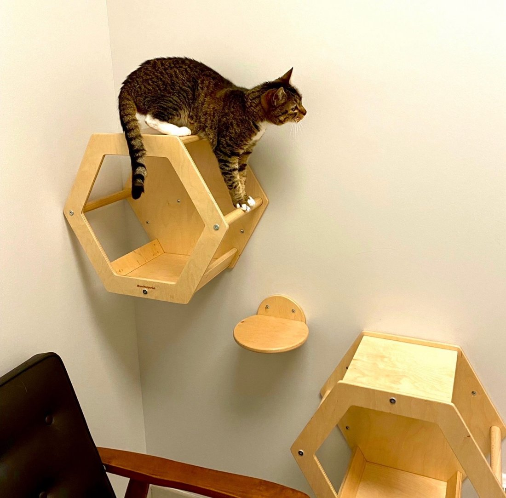

When I was a kid, I tagged along whenever my mother took the family dog to the vet. At some point in every visit, someone in scrubs would appear, take the leash, and disappear through the door at the back of the exam room. Nobody explained where they were going. Nobody asked. The dog went to the back because the dog always went to the back. Shaking on her scrawny legs, trying to get purchase, scrabbling across the slick linoleum floor.
I carried that assumption straight through vet school, where it got upgraded to policy. It was drilled into my head that owners should never be involved in restraint. Someone could get bitten, and then someone could get sued. Taking the pet to the treatment area was faster for the team and kinder to the client, who was spared the sight of a needle. I accepted every word of it, and for years I practiced exactly that way.
I would love to tell you I changed because of a welfare epiphany. I did not. I changed because of square footage.
I was running a four exam room hospital with a treatment area roughly the size of a hall closet. And we were busy. Two large dogs could not safely be back there at the same time. That was the entire constraint. Necessity signed us up for in-room care long before philosophy did.
And once I was paying attention, I noticed what “efficient” actually looked like. You know this dog. The one rooting under mom’s arm searching for the invisibility cloak. The one wedged under the bench at the farthest reach of the leash. You extract him, drag him through the scary door, and then your assistant stands in treatment holding him, waiting for a second pair of hands to free up, because everyone back there is mid-task. Now she is playing peekaboo, hiding the anxious German shepherd from the cat on the treatment table who is out of kitty minutes. The blood draw takes ninety seconds. The waiting takes ten minutes. Then the dog returns to the exam room and spends the rest of the visit trying to become part of the floor.
Now run the same visit without the field trip. The pet stays put. The owner does the one job she is better at than anyone on my payroll, which is being her dog’s person. She feeds treats and narrates the whole thing in a voice she would deny using in public. One trained team member holds. Another draws the sample. I am down the hall doing something that actually requires my license. Nobody waited on anybody, and the dog’s heart rate never hit the ceiling.
I know the objection, because I used to make it myself. Efficiency. Running the pet to the back is supposed to be the fast option. It is not, and you do not have to take my word for it. Put a stopwatch on it. Time a friendly patient’s blood draw done in the room, then time the same draw the old way, door to door, including the stretch where your assistant stands in treatment waiting for a free set of hands. One of those numbers is going to embarrass the other. That is the whole argument. You do not lecture a practice out of a habit this old. You time it. It runs on the same logic as letting the doctor set the pace of the clinical day, the efficiency this series keeps circling back to.
So we started doing everything we could in the room, client willing, and three things happened. Visits got faster. The pets were calmer. And clients started trusting us in a way I could feel.
Because here is the sentence I have heard from new clients for twenty years: “The last vet took my dog to the back, and I have no idea what they did back there.” I am sure the last vet did nothing wrong. It does not matter. The door does the damage.
Are there exceptions? Of course. The dog who genuinely guards his person. The client who goes gray at the sight of a needle. For them, the back exists, and I use it. Every pet gets a judgment call and every client gets asked.

Offered climbing shelves in the exam room, this patient developed strong feelings about staying in it.
Nothing about this is fringe anymore. Fear Free built an entire certification around lowering fear, anxiety, and stress during visits. PetVet365 built a whole practice group committed to fear free care. VEG built its emergency model on clients staying with their pets, in an ER of all places, where the excuses for separation would be easiest to reach for. If an emergency room can keep families together during a crisis, I can manage it for a nail trim.
So why is the habit still standing?
I got a client’s-eye view recently. I took my own dog to a vet. They knew I was a veterinarian. They took him to the back anyway. I trusted that team completely, and that is exactly what made it instructive. Even with a DVM after my name and full confidence in the people behind the door, sitting there staring at it felt lousy. Now hand that feeling to a client with neither.
The easy answer is that this is how we have always done it. But that was never a reason. It is a description of a reason we have forgotten. Habits this old survive because the original justifications still feel true, long after the facts underneath them have moved. So let’s be honest about what is actually left.
There is logistics. The treatment area has the table, the good light, the supplies within reach. But most exam rooms are trivially easy to stock with what a routine visit actually needs. A towel, a syringe, a handful of tubes, nail clippers, styptic powder. Put a stocked drawer in every room and the room becomes the workshop for everything short of the hard cases.
There is the fear of what the client might see. A quicked nail bleeds with a drama all out of proportion to the harm. An expressed gland is, let’s be honest, upsetting to witness if you did not come prepared for it. Both are routine, both look alarming to someone who has never seen them, and both can generate a complaint even when the medicine was perfect. So we take the pet to the back and spare everyone the sight. But the client still saw something. She saw the door close. And the closed door is the part she remembers, and repeats. We hid the small alarming thing and built a bigger one in its place. The door does the damage.
Which leaves the reason nobody says out loud. We get nervous working in front of an audience.
Working on a patient while someone watches is a skill, and nobody teaches it. My first associate job was in a practice with surgery windows facing the retail floor of a very, very large pet store. Shoppers with carts full of squeaky toys watched me operate. Nothing cures stage fright faster than a Saturday crowd watching you close. It was awful, and then it wasn’t, and I have been comfortable working in front of clients ever since.
This is a mentoring problem, and mentoring problems are solvable. Start the new grads and young techs on the easy patients. Stand in the room with them until the shake leaves their hands. The skill comes. Mine came in front of a pet store.
Try it for a week. Pick your friendliest patients, keep them in the room, and watch the clock. Then watch the dog leave with his tail up, and the client watch you do your work instead of wondering about it.
The back can keep the dentals.
— Dr. V
The Gray Oak Journal
Dr. V is a veterinarian with over twenty years of clinical and operational leadership experience. She has owned and operated several veterinary hospitals, weathered many shifts in the industry, and served on advisory councils. She writes The Gray Oak Journal at grayoakjournal.com.